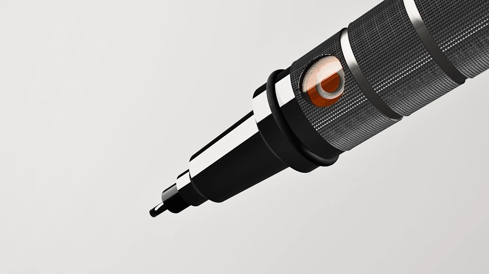
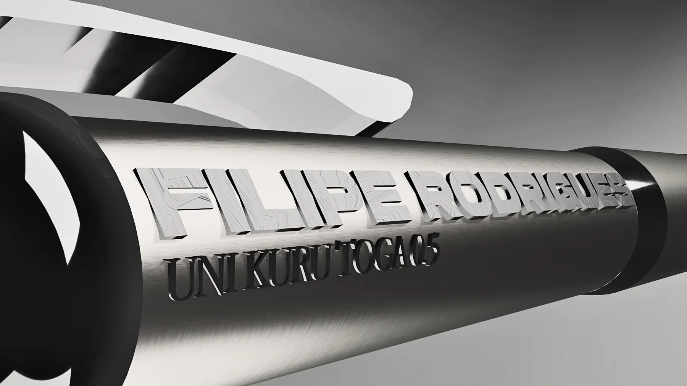

01 / Product film
Independent academic concept · 2026
An everyday tool.
Given the luxury treatment.
A mechanical pencil rebuilt through technical drawing, accurate modelling and the visual language of fragrance advertising.
Treat the familiar
like an icon.
The Uni Kuru Toga was studied from multiple angles, broken into technical parts and modelled in Blender before lighting, animation and editing transformed it into a monochrome product campaign.
- Output
- Stills + 78-second film
- Direction
- Perfume campaign language
- Role
- Research, model, light, animate, edit
Independent academic work. Not commissioned by or affiliated with Uni Mitsubishi Pencil.

